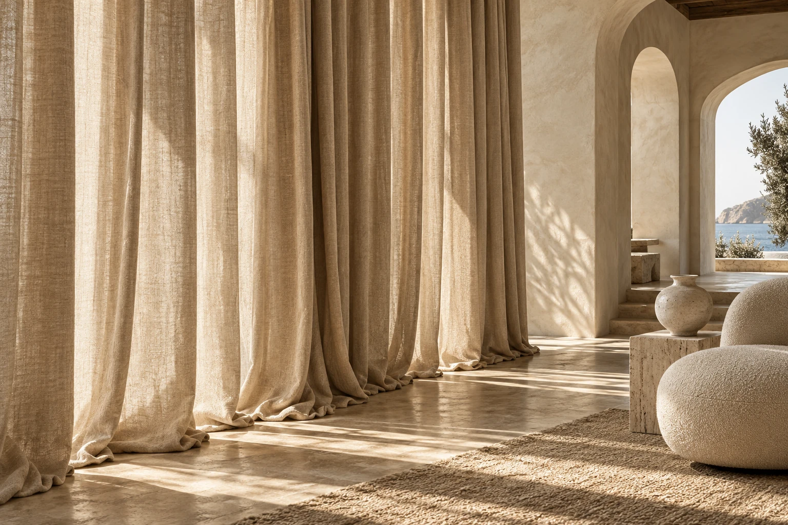
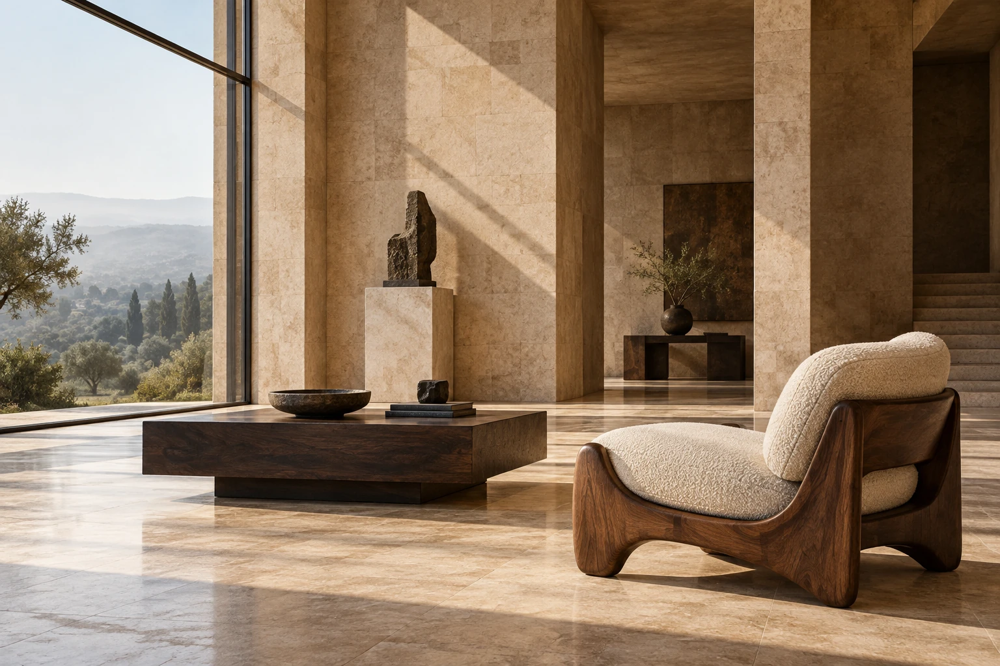

An exploration of form, texture & interactionSelected
Selected
Design Studies.
Two perspectives on the spaces we inhabit. Editorial design meets interactive materials, bringing textiles, furniture, and architecture into a digital conversation.

01 / VELOURVELOUR
Textile atelier / Interactive material studyA tactile textile portfolio with an animated fabric explorer. Choose a weave, find a color, and shape the light across a responsive surface.

02 / FORMAFORMA
Furniture & architecture / Product visualizationSculptural objects in a considered architectural setting. Explore upholstery and timber finishes, then reveal a space in a different light.
A closer lookDesign that invites
Design that invites
you to explore.
Both studies combine original visual direction with working material controls, responsive layouts, and carefully considered details.Independent concept projects. Editorial imagery is AI-generated.